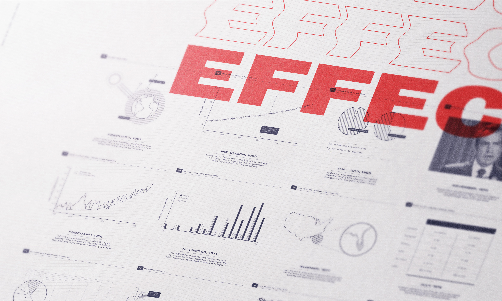
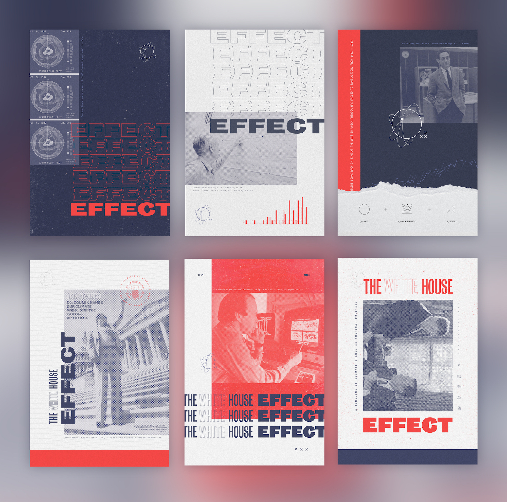

As we begin to witness the effects of climate change today, the result will be catastrophic unless we act now. In order to accurately take the measures to slow our changing climate, we need to learn how America failed to solve the problem when we had the chance. The White House Effect is an informational website including a historical timeline of information from 1961 — 1989 on significant scientific research, government skepticism, and censorships of congressional testimonies.
➔ Website
➔ Booklet
➔ 36" x 48" Poster
➔ Promo Post Cards
Using artifacts such as newspaper clippings, photographs and scientific reports, the design reflects the time period of the topic. Paired with more graphic elements such as the repeating waves, represents the result of the lack of action from the time period.
➔ Adobe Illustrator
➔ Adobe Photoshop
➔ Adobe InDesign
➔ Webflow
Click here to view the full sized poster.
